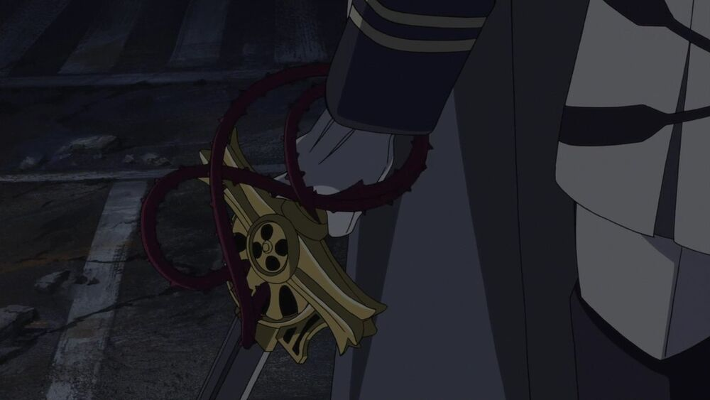

Демоническое оружие
Проклятое или же Демоническое оружие - оружие большинства отряда "Лунного демона" Императорской демонической армии японии (основные силы используют зачарованное оружие)
Демоническое оружие создается путем непосредственного запечатывания преждевременно призванного демона. Его запечатывают в священном оружии с помощью проклятия демонов. Предметы, используемые для запечатывания демонов, почти всегда оказываются оружием: мечами, топорами и луками. Оружие должно быть освящено и очищено - этот процесс занимает годы. Демоническое оружие настолько мощное, что их создание совершили революцию в мире, именно это привело традиционную магию к невостребованности. Благодаря этому оружию сила человека становится равной силе вампира - увеличивается в 7 раз.
Вампирское оружие
Вампирское оружие - оружие, коим пользуется вампирское общество. Существует два класса вампирского оружия. Таковым пользуются практически все слои вампирского общества. Однако, не у всех вампиров оно есть. Например, ни в манге, ни в аниме не было показано какое-либо оружие у Третьих прародителей Крул Цепеш и Леста Карра (возможно).
Вампирское оружие первого класса намного более мощное, чем второклассное. В большинстве случаев первый класс представляет из себя мечи любых пород и мастей. Главная особенность этого класса в том, что после слов "Меч, выпей мою кровь.", оружие прокалывает руку владельца. Вампирская кровь поступает в меч, делая оружие во множество раз сильнее.
Оружие второго класса используется обычными вампирами и не столь мощно, как первоклассное оружие. Обычно, второклассное оружие представляет из себя стандартное вооружение, как правило, для ближнего боя.